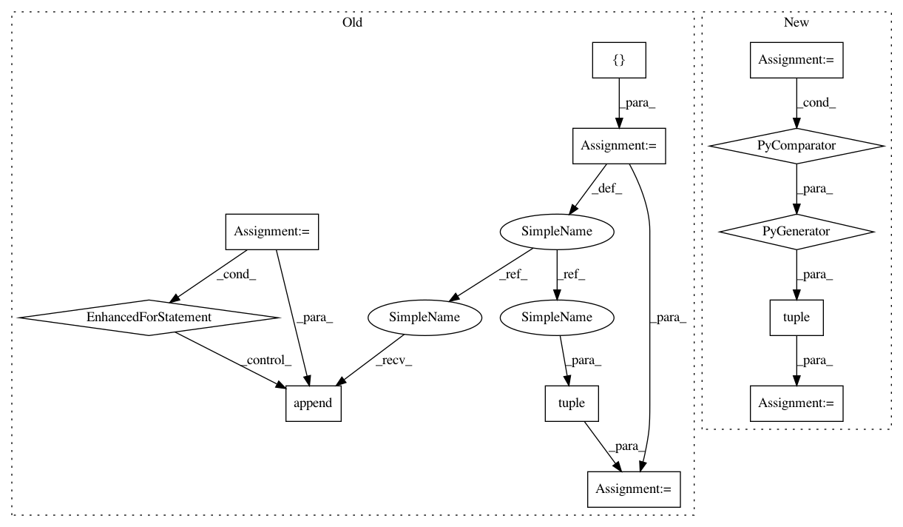

378c2b621623d2137541aca4a40c81b8d63a10be,dataset/batch.py,Batch,__getitem__,#Batch#Any#,56
Before Change
def __getitem__(self, item):
if isinstance(self.data, tuple):
res = []
for data_item in self.data:
res.append(data_item[item])
res = tuple(res) // pylint: disable=redefined-variable-type
else:
res = self.data[item]
return res
After Change
def __getitem__(self, item):
if isinstance(self.data, tuple):
res = tuple(data_item[item] for item in self.data)
else:
res = self.data[item]
return res
In pattern: SUPERPATTERN
Frequency: 3
Non-data size: 12
Instances
Project Name: analysiscenter/batchflow
Commit Name: 378c2b621623d2137541aca4a40c81b8d63a10be
Time: 2017-04-29
Author: roman-kh@users.noreply.github.com
File Name: dataset/batch.py
Class Name: Batch
Method Name: __getitem__
Project Name: tensorflow/tensorflow
Commit Name: fd758534e21a68dfc934cf5dff3fe4183986df51
Time: 2021-01-06
Author: gardener@tensorflow.org
File Name: tensorflow/python/keras/utils/version_utils.py
Class Name:
Method Name: swap_class
Project Name: keras-team/keras
Commit Name: bf464d7ed9283988fea1f548a11a0171fd2ff364
Time: 2021-01-06
Author: gardener@tensorflow.org
File Name: keras/utils/version_utils.py
Class Name:
Method Name: swap_class